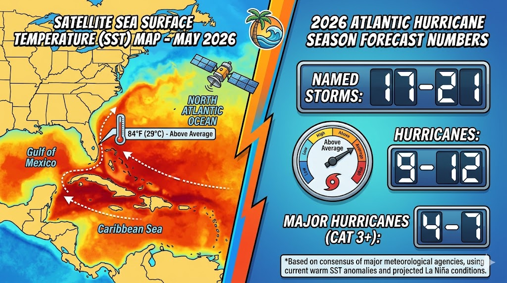
The 2026 Atlantic hurricane season runs June 1 through November 30, with peak activity between mid-August and mid-October. Multiple forecasting organizations have weighed in on what to expect.
| Organization | Named Storms | Hurricanes | Major (Cat 3+) | Released |
|---|---|---|---|---|
| TSR (Tropical Storm Risk) | 14 | 7 | 3 | Dec 2025 |
| AccuWeather | 11-16 | 4-7 | 2-4 | Mar 2026 |
| Colorado State University | TBD | TBD | TBD | Apr 9, 2026 |
| NOAA | TBD | TBD | TBD | Late May 2026 |
| Historical Avg (1991-2020) | 14 | 7 | 3 | — |
El Nino is the dominant variable this year. NOAA's Climate Prediction Center gives a 62% probability of El Nino developing by June-August 2026, rising to 72-80% by fall. El Nino increases upper-level wind shear that disrupts storm formation. In El Nino years, the Atlantic averages roughly 10 named storms and 5 hurricanes, compared to 15 storms and 8 hurricanes during La Nina years.
There is a 15% chance of a "super El Nino" (≥2°C above normal), which would further suppress activity.
Atlantic sea surface temperatures remain "exceptionally, exceptionally warm" — extending hundreds of feet below the surface. The Gulf of Mexico has warmed at twice the global rate since 1970. This creates major rapid-intensification risk regardless of El Nino. Storms can go from tropical storm to Category 4 in under 24 hours when they cross superheated waters.
The 1992 season produced just 7 named storms. One of them was Hurricane Andrew, which devastated South Florida and caused $27 billion in damage. A quiet season means nothing if that one storm hits your community.
Last year produced 13 named storms, 5 hurricanes, and 4 major hurricanes — including 3 Category 5 storms (Erin, Humberto, and Melissa), the second-most in a single season on record. No hurricane made U.S. landfall in 2025, but 4 of 5 hurricanes reached major status — the highest percentage ever observed — underscoring the rapid-intensification threat.
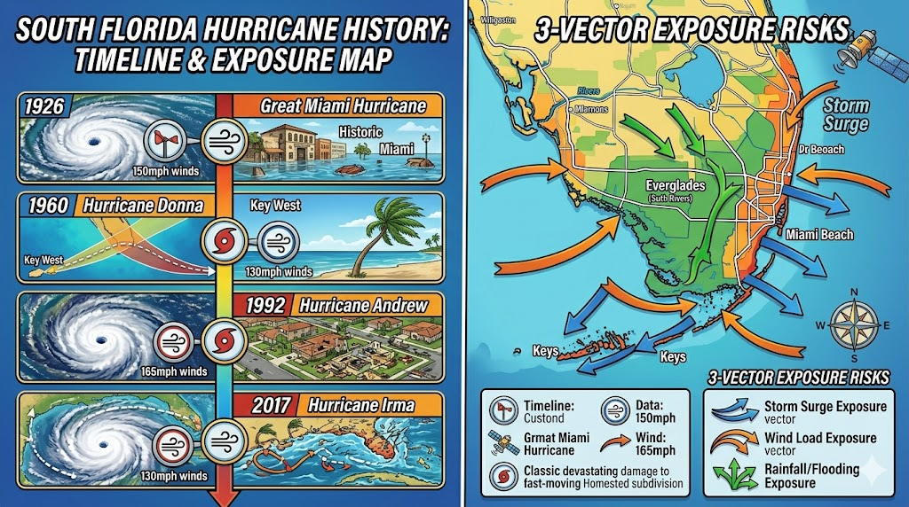
South Florida's hurricane history is sobering. Palm Beach County has been struck by four Category 4+ hurricanes since 1926. A hurricane of any category can be expected to pass within 50 nautical miles of South Florida approximately every 5-7 years.
| Storm | Year | Category | Impact |
|---|---|---|---|
| Lake Okeechobee Hurricane | 1928 | Cat 4 | 2,500-3,000 killed — 2nd deadliest U.S. natural disaster |
| Hurricane Andrew | 1992 | Cat 5 | $27 billion in damage, devastated South Florida (landfall in Miami-Dade) |
| Hurricane Frances | 2004 | Cat 2 | 17,000+ buildings damaged in Palm Beach County |
| Hurricane Wilma | 2005 | Cat 3 | $20 billion total U.S. damage, devastated PBC & Broward |
| Hurricane Irma | 2017 | Cat 4 | $300 million in PBC damage alone |
South Florida faces exposure from three directions (Atlantic, Caribbean, and Gulf of Mexico), sits adjacent to the energy-rich Gulf Stream, and its flat terrain allows hurricane-force winds to carry far inland. Palm Beach County has not experienced a major storm surge in over 50 years, but massive population growth means future surges will be far more devastating.
| Alert | Meaning | Timing | Your Action |
|---|---|---|---|
| Tropical Storm Watch | Winds 39-73 mph possible | ~48 hours | Monitor updates, review plan |
| Tropical Storm Warning | Winds 39-73 mph expected | <36 hours | Finalize preparations |
| Hurricane Watch | Winds 74+ mph possible | ~48 hours | Activate storm mode |
| Hurricane Warning | Winds 74+ mph expected | <36 hours | Finish tasks, evacuate if ordered |
| Storm Surge Warning | Life-threatening coastal flooding | 48-36 hours | Treat as evacuation order |
Only trust official sources. The National Hurricane Center, National Weather Service, and local emergency management are your only reliable forecast sources. Enable wireless emergency alerts and keep a battery-powered NOAA weather radio.
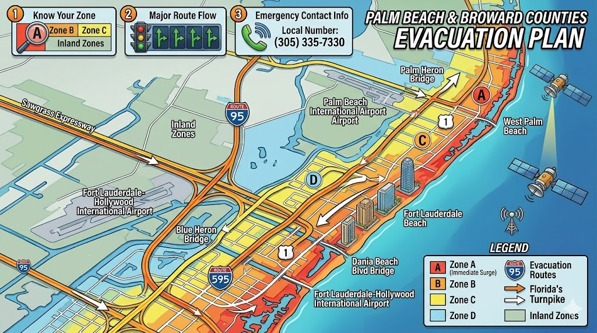
Palm Beach County assigns zones A through E and L, based on storm surge vulnerability. Zone A evacuates first. Critical fact: Palm Beach County evacuates for storm surge, not wind.
Look up your zone: PBC Interactive Evacuation Zone Map at discover.pbc.gov or call 561-712-6400.
Check your zone at broward.org/Hurricane or call 311.
St. Andrews is located in western Boca Raton, well inland from the coast. The community is NOT in a coastal surge evacuation zone, which means most residents can shelter in place during Category 1-2 storms if their home is properly hardened. However, the clubhouse is NOT a designated public shelter.
| Route | Direction | Notes |
|---|---|---|
| I-95 North | Northbound | Fastest but congests first |
| Florida Turnpike | Northbound | Less congested; toll-free during evacuations |
| US-441 / SR-7 | Northbound | Surface road alternative |
| I-75 (Alligator Alley) | Westbound | Cross-state option; toll-free during evacuations |
Florida no longer uses contraflow. FDOT activates Emergency Shoulder Use (ESU) instead. Real-time info: FL511.com or dial 511.
72 hoursLeave at least 72 hours before anticipated landfall. Book inland hotels as soon as a storm enters the forecast cone — availability evaporates during multi-county evacuations.
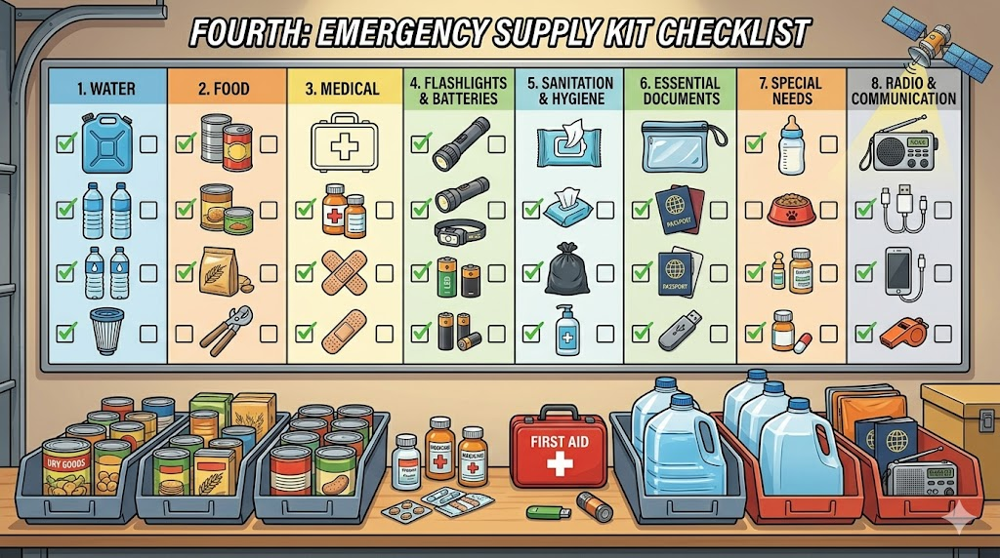
7-10 DaysFlorida's Division of Emergency Management recommends a full 7-day supply — and recent guidance suggests 10-day readiness due to supply chain disruptions.
Prepare two kits: a Go-Bag (3-day essentials for evacuation, kept near the door June through November) and a Stay-at-Home Kit (full 7-10 day supply for sheltering in place).
Florida Tax-Free Supplies: As of August 1, 2025, batteries, portable generators (under 10,000 watts), fuel containers, fire extinguishers, smoke detectors, CO detectors, tarps, and personal flotation devices are permanently sales-tax exempt. Buy early when shelves are stocked.
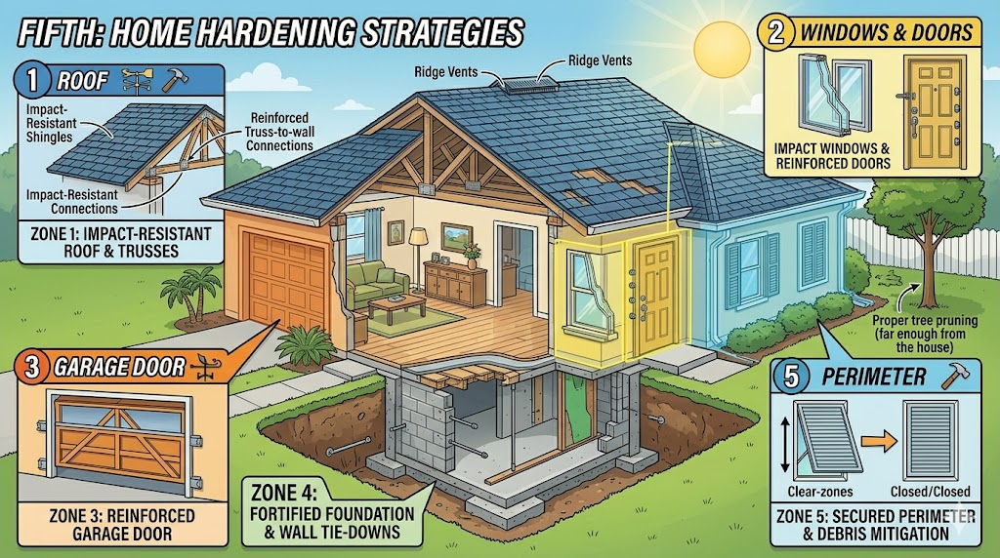
The most important precaution is protecting the areas where wind can enter your home. There are five critical zones to address.
Inspect annually for loose or damaged shingles, flashing, and soffits. Strengthen roof-to-deck attachments and roof-to-wall connections. Install secondary water resistance. Under Florida's 25% rule, if more than a quarter of the roof is damaged, the entire roof must be brought up to current code.
Reinforce the connection between roof and walls. Double-wrap connectors on both sides of studs create a continuous load path from roof to foundation.
Install impact-rated windows or hurricane shutters. In the High-Velocity Hurricane Zone (HVHZ), shutters and windows must carry Miami-Dade TAS 201/202/203 approval.
Add steel jamb shields at latch and deadbolt locations. Verify deadbolts throw a full 1 inch into a reinforced strike.
The number one failure point during high winds. If the garage door fails, wind pressurizes the interior and can blow off the roof.
| Type | Cost (Whole Home ~2,500 SF) | Key Advantage |
|---|---|---|
| Storm panels (aluminum/steel) | $3,500-$9,000 | Lowest cost, reusable |
| Accordion shutters | $7,500-$12,500 | Permanent mount, good value |
| Bahama shutters | $9,000-$15,000 | Decorative, provides shade |
| Colonial shutters | $10,000-$16,000 | Best aesthetic for traditional homes |
| Roll-down shutters | $12,500-$22,500 | 30-second motorized deployment |
| Impact windows (per window) | $1,200-$2,500 | Year-round, no seasonal install |
Impact windows deliver 25-45% insurance discounts on wind coverage, add $10,000-$20,000 in home value, and eliminate seasonal shutter installation. Manufacturing takes 4-8 weeks — order in spring.
The Florida Legislature allocated $280 million for 2025-2026. The program offers free wind-mitigation inspections and matching grants up to $10,000 for eligible homeowners. Apply at mysafeflhome.com.
Important for St. Andrews homeowners: The $10,000 grant is available for homes with an insured value of $700,000 or less (low-income homeowners exempt from this cap). Most St. Andrews homes exceed this threshold, but the free wind-mitigation inspection is available to all eligible homeowners and can still yield significant insurance savings.
Do NOT drain your pool. The water provides weight that prevents the pool from "popping" out of the ground. Super-chlorinate, lower the water level by 1-2 feet, and turn off the pump. Do not cover the pool or place furniture in it.
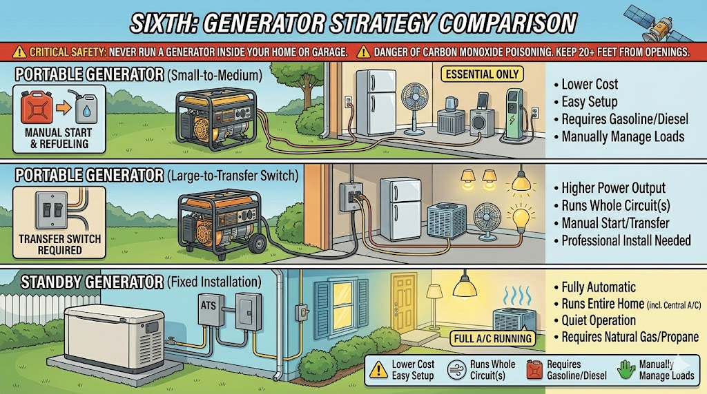
For homes of 3,000-5,000+ square feet (typical at St. Andrews), a whole-home standby generator (22kW-48kW) is the standard for maintaining full comfort during extended outages.
| Type | Best For | Key Benefit | Cost Range |
|---|---|---|---|
| Portable | Short-term, essentials only | Most affordable | $500-$2,000 |
| Portable + Transfer Switch | Whole circuits, manual operation | Higher power output | $2,000-$5,000 |
| Standby (Whole-Home) | Full comfort, extended outages | Automatic activation | $15,000-$30,000+ |
Leading brands: Generac (~75% market share), Kohler, Cummins. Natural gas is 30-40% cheaper to operate than propane and eliminates fuel storage.
In gated communities like St. Andrews, generators must comply with HOA requirements for placement, enclosures, noise levels, and aesthetic standards. Many communities require Architectural Review Board approval and enclosures matching the home exterior. Plan installations with compliance in mind — allow 4-8 weeks lead time.
CARBON MONOXIDE POISONING IS THE LEADING CAUSE OF POST-HURRICANE DEATHS. Never run a generator indoors, in a garage, or any enclosed space. Position at least 20 feet from all windows, doors, and vents. Install CO detectors on every level (tax-free in Florida).
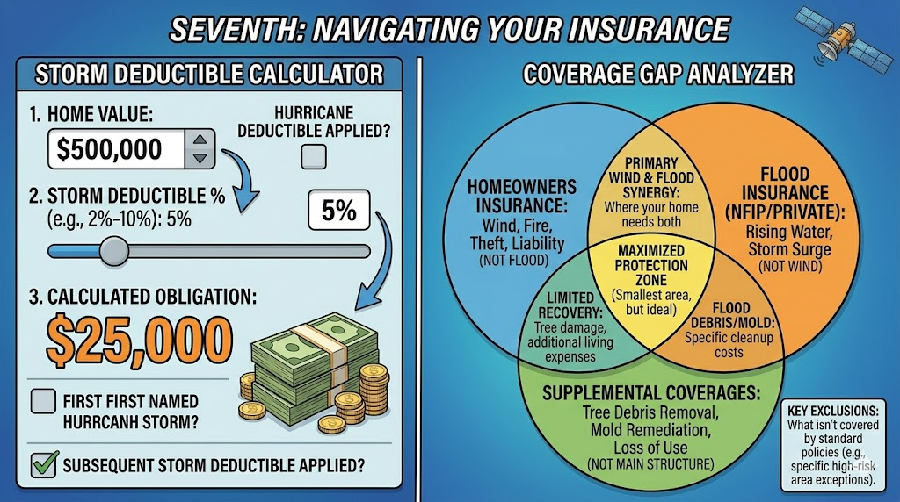
Every St. Andrews homeowner needs three policies: Homeowners Insurance, Flood Insurance, and Windstorm/Named Storm Coverage. Standard homeowners insurance does NOT cover flooding.
Florida hurricane deductibles are percentage-based, not flat dollar amounts.
| Insured Value | 2% Deductible | 5% Deductible | 10% Deductible |
|---|---|---|---|
| $1,000,000 | $20,000 | $50,000 | $100,000 |
| $2,000,000 | $40,000 | $100,000 | $200,000 |
| $3,000,000 | $60,000 | $150,000 | $300,000 |
| $5,000,000 | $100,000 | $250,000 | $500,000 |
Always file a claim — even if damage is below your deductible. It creates a credit toward your deductible for subsequent storms that calendar year.
The NFIP's $250,000 building coverage limit is grossly insufficient for luxury homes. Private flood insurance through carriers like Neptune Flood, Zurich, and Hiscox covers up to $2.5M-$10M.
| Flood Zone | Annual Premium ($1M+ Home) |
|---|---|
| VE (coastal, storm surge + waves) | $8,000-$25,000+ |
| AE (near water, high risk) | $4,000-$12,000 |
| X (moderate/low risk) | $800-$2,500 |
30 DaysNFIP flood policies carry a 30-day waiting period. Buy before the season, not when a storm approaches. Private flood insurance may have a shorter 7-10 day wait.
Citizens Property Insurance policy count dropped from 1.42 million (Oct 2023) to ~395,144 (Jan 2026). OIR approved an average 8.8% rate cut for 2026. Seventeen new companies have entered the market since 2022 reforms. South Florida will see the largest reductions.
A $100-$200 inspection can yield up to 30% savings on your policy. Valid for 5 years. The single highest-ROI preparedness action.
Walk through every room narrating as you go. Zoom in on labels, serial numbers, and brand names. Open drawers, closets, and cabinets. For luxury items — art, jewelry, wine, antiques — maintain current professional appraisals and scheduled personal property endorsements (floaters). Standard policy sublimits on jewelry ($1,500-$2,500) and art ($2,500-$5,000) are trivially inadequate for luxury collections.
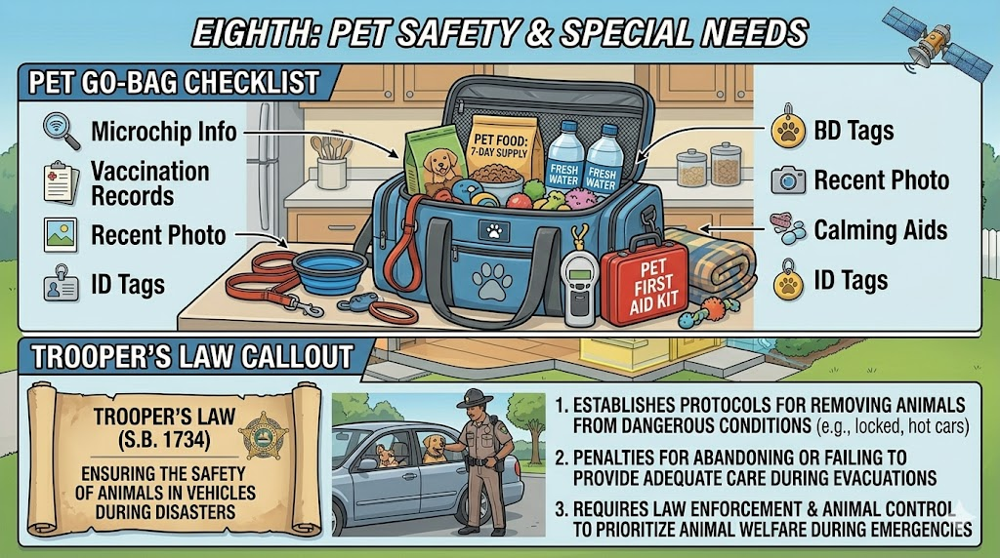
TROOPER'S LAW (SB 150): It is illegal in Florida to abandon, confine, or leave pets behind during a hurricane, tropical storm, or tornado warning.
Palm Beach County: West Boynton Recreational Center, 6000 Northtree Blvd., Lake Worth, FL 33463. Pre-registration opens May 1 through PBC Animal Care and Control (561-233-1271).
Broward County: Three pet-friendly shelters: Lyons Creek Middle School (Coconut Creek), Everglades High School (Miramar), and Falcon Cove Middle School (Weston). Pre-register through the Humane Society of Broward County (954-989-3977) or Pet Hurricane Hotline (954-266-6871).
For luxury homeowners: inland pet-friendly hotels are preferable to public shelters. Book early and verify pet policies in advance.
Both counties operate Special Needs Shelters with medical personnel and backup electricity.
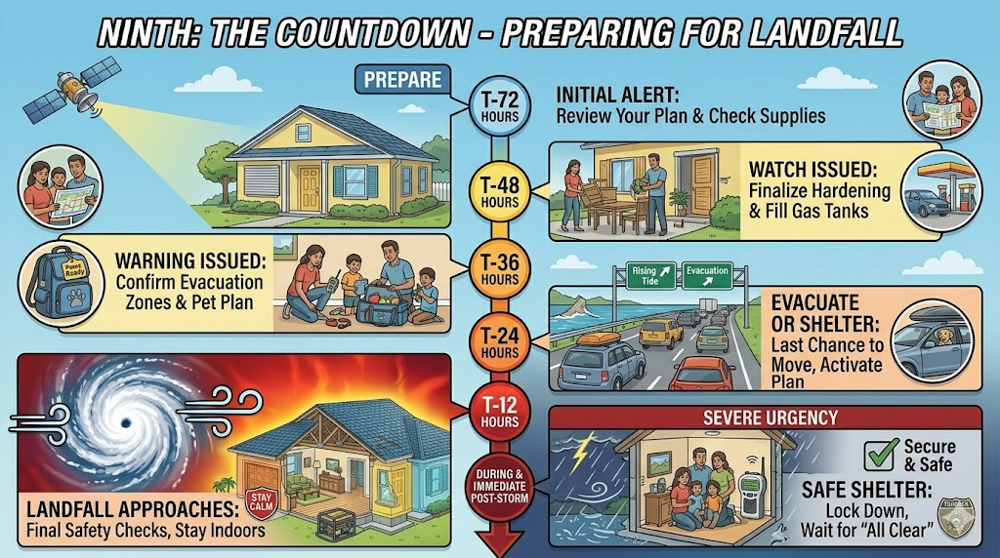
Stay indoors, away from ALL windows. Use your safe room — interior room, lowest floor, no windows. NEVER go outside during the eye. The calm is temporary and winds return violently from the opposite direction. Use flashlights, not candles. Never run a generator indoors.
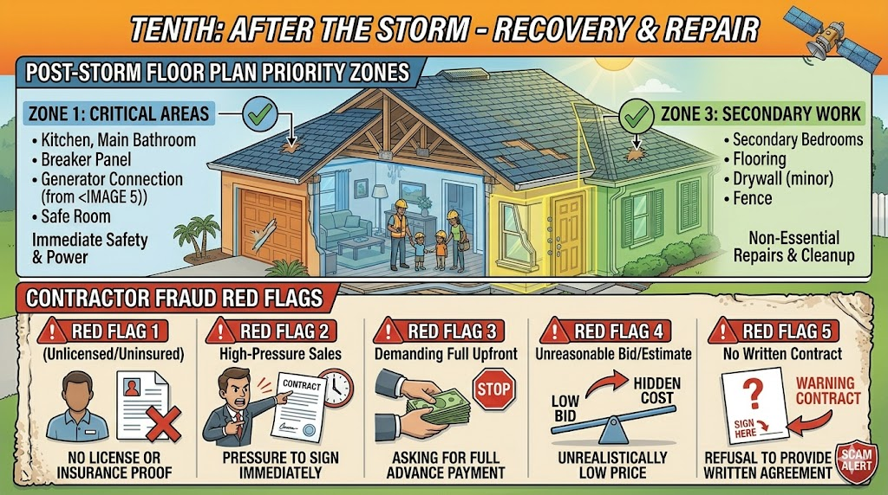
Wait for the official all-clear. Do not venture outside until authorities confirm it is safe.
Mold begins growing within 24-48 hours of water intrusion. Run dehumidifiers and fans continuously. Pull back carpet and padding. Open cabinet doors. Move furniture away from wet walls. Act immediately.
| Deadline | Timeframe |
|---|---|
| File initial claim | 1 year from date of loss |
| Supplemental claims | 18 months |
| Insurer acknowledges claim | Within 7 days |
| Insurer completes inspection | Within 30 days |
| Insurer pays or denies | Within 60 days |
| Phase | Timeframe | Actions |
|---|---|---|
| Immediate stabilization | First 24-48 hours | Tarp roof, board windows, extract water |
| Moisture mitigation | 3-7 days | Dehumidifiers, remove wet materials |
| Structural stabilization | 1-2 weeks | Engineers, compromised supports |
| System repairs | 2-4 weeks | Electrical, plumbing, HVAC |
| Interior finish | 1-3 months | Drywall, flooring, cabinetry |
| Exterior & cosmetic | 3-6 months | Exterior restoration, landscaping |
Red flags: unsolicited door-knocking, demands for upfront payment, offers to "handle your insurance claim," pressure to sign exclusive contracts, no license proof.
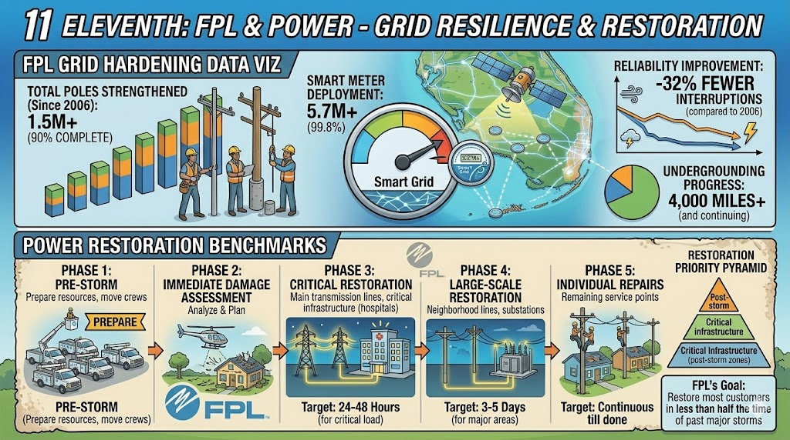
FPL has invested $5+ billion since 2006 in grid hardening. Underground lines performed 5-14 times better than overhead during the 2024 hurricane season.
| Storm | Category | Customers Affected | Restoration Time |
|---|---|---|---|
| Hurricane Milton (2024) | Cat 3 | 2+ million | 5 days |
| Hurricane Helene (2024) | Cat 4 | 680,000 | 3 days |
FPL prioritizes restoration: critical facilities first, then main power lines, then neighborhoods with the most customers, then individual homes. Gated communities like St. Andrews may have different timelines based on grid infrastructure. A whole-home generator is strongly recommended.
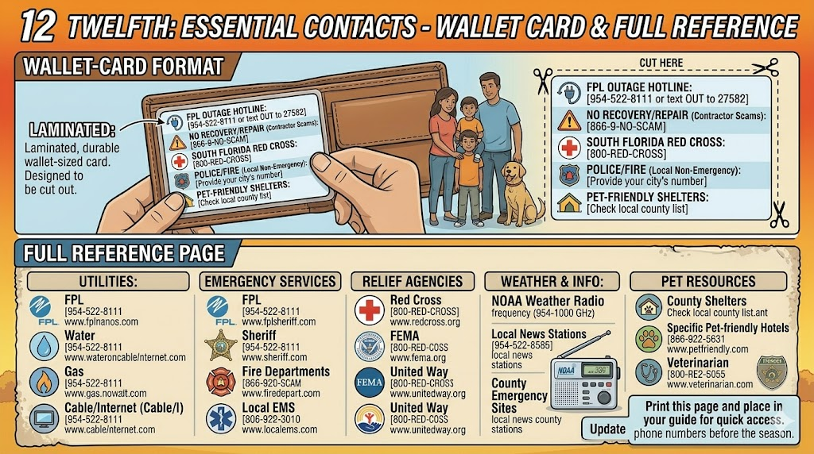
| PBC Emergency Management | 561-712-6400 (24/7 during emergencies) |
| Broward County Emergency | 954-831-3900 | Hotline: 311 or 954-831-4000 |
| Boca Raton Citizen Info Center | 561-982-4900 (activated during storms) |
| FPL Outage Reporting | 1-800-468-8243 (1-800-4-OUTAGE) |
| FPL Outage Map | FPLmaps.com |
| 211 Helpline (PBC/Treasure Coast) | Dial 2-1-1 or 866-882-2991 |
| FL Division of Emergency Mgmt | FloridaDisaster.org | 1-800-354-3571 |
| FEMA Disaster Assistance | 1-800-621-3362 | DisasterAssistance.gov |
| FL Attorney General Fraud | 1-866-966-7226 |
| FL Dept. of Financial Services | 1-800-227-8676 |
| Red Cross (South Florida) | 1-800-733-2767 |
| FL511 (Traffic/Evacuation) | Dial 511 | FL511.com |
| PBC Water Utilities Emergency | 561-740-4600 |
| PBC Special Needs Shelter | 561-712-6400 |
| Broward Special Needs Registry | 954-831-3902 |
| Contractor License Verification | MyFloridaLicense.com |
| My Safe Florida Home | mysafeflhome.com |
| Disaster Distress Helpline | 1-800-985-5990 |
| FEMA Fraud Hotline | 1-866-720-5721 |
| NOAA Weather Radio (WPB) | 162.475 MHz |
| NOAA Weather Radio (Ft. Pierce) | 162.425 MHz |
| Broward Paratransit/TOPS | 866-682-2258 |
| FL SAIL Hotline (emergencies) | 1-800-342-3557 |
Social media to follow: @PBCDEM, @BrowardEMD, @NWSMiami, @FLSERT, @FPLConnect
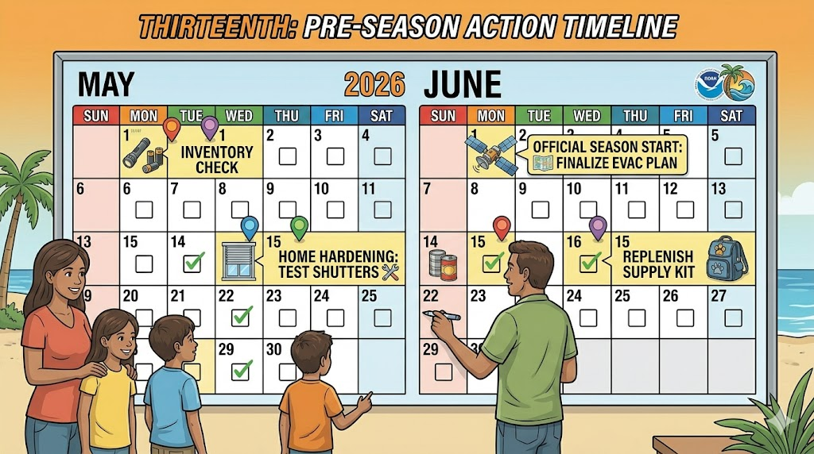
Before June 1Complete all preparation before hurricane season begins. The homeowners who weather hurricanes best are those who completed their checklist in May — not those scrambling when a watch is issued in September.
St. Andrews Country Club is a private, gated luxury community in western Boca Raton, featuring Mediterranean, transitional, and contemporary architecture on manicured grounds with two championship golf courses. Homes range from approximately $1.5M to $15M+.
Edmund Bogen
RESIDENT AND MEMBER, ST. ANDREWS COUNTRY CLUB
The Edmund Bogen Team at Douglas Elliman
561-306-7117 | edmund@bogenhomes.com
For property-specific storm preparation questions, insurance documentation assistance, or post-storm property assessment.